Restaurant Suite Scenarios And Images
This guide combines the live dashboard captures, generated Flutter workspace screenshots, and the operational flow cards already produced from the API walkthrough.
factory_app. Dashboard images come from the live owner dashboard capture set already in the repository.
Scenario 1: Returning Customer Dines In And Earns Loyalty
Step 1. Customer opens the app and checks order memory, restaurants, and points
The customer app is designed like a warm marketplace homepage: registered restaurants, previous orders, and loyalty points are visible immediately.
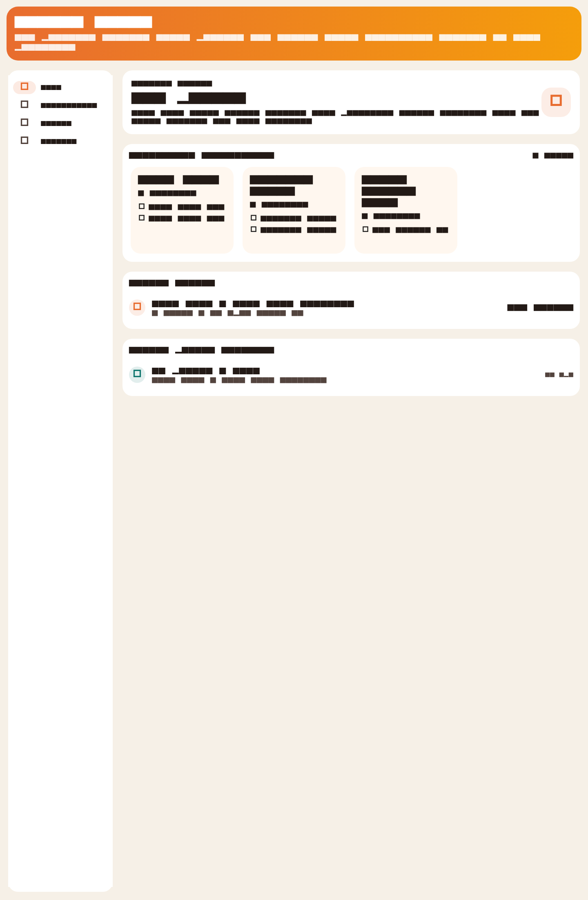
Step 2. Waiter sees the floor in a table-first layout
The waiter app prioritizes table occupancy, table value, and guest context, which is the fastest mental model for dine-in operations.
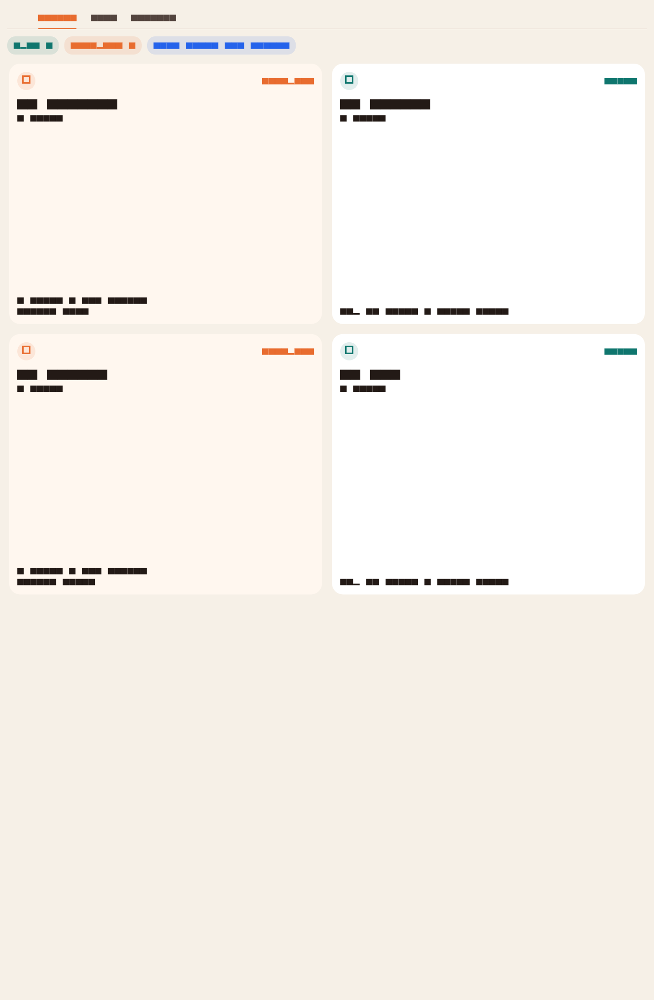
Step 3. Waiter opens the active table, attaches customer phone, adds notes, answers, and modifiers
This closes a meaningful gap in the old repo state because dine-in orders can now be tied to a real customer profile for history and loyalty visibility.
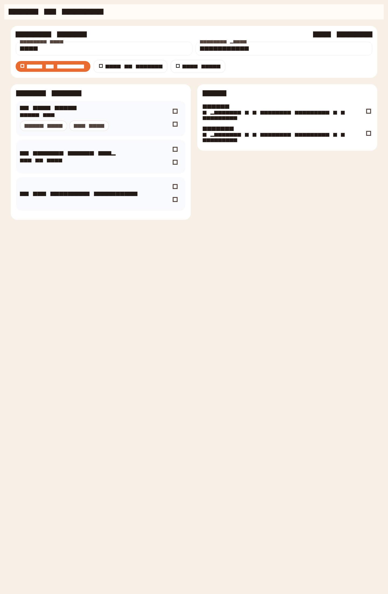
Step 4. Kitchen receives the ticket and advances item states
Queued, preparing, and ready states are visible per item. Kitchen can advance each line item without waiting on a full-order status change.
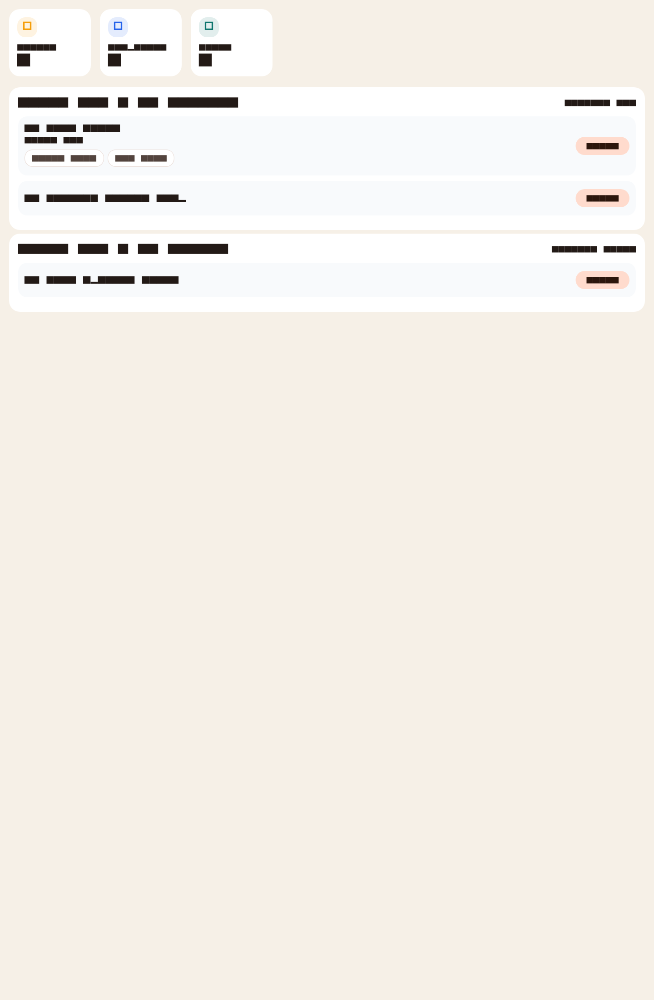
Step 5. Cashier settles the order with one or multiple tenders
The cashier workspace supports multiple tenders in one settlement flow, which directly addresses a visible gap against Foodics-style dine-in bundles.
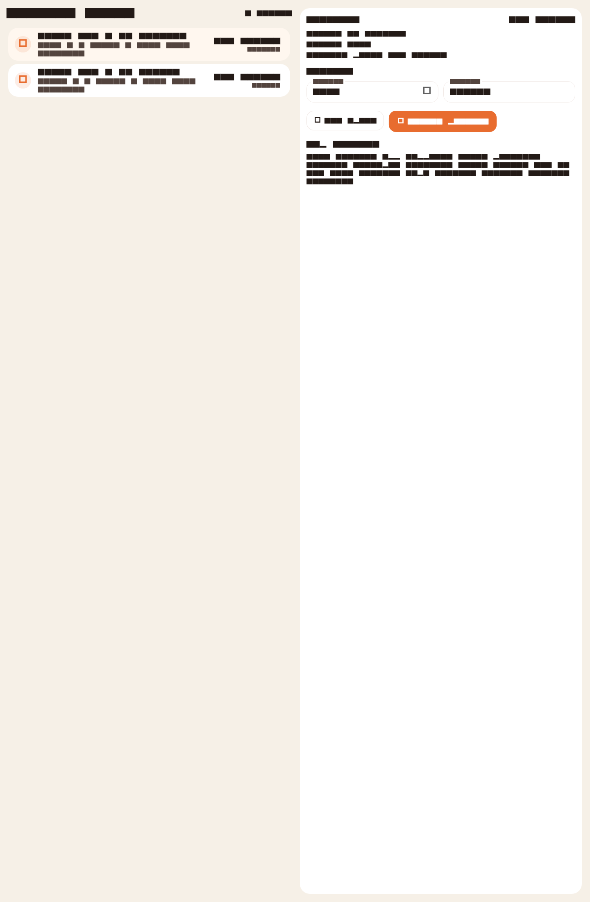
Step 6. Owner and shareholders see the result in branch-level analytics
The owner workspace surfaces revenue, cashier queue, KDS backlog, branch ranking, and loyalty member count. The live dashboard capture below shows the web side of the same operational flow.
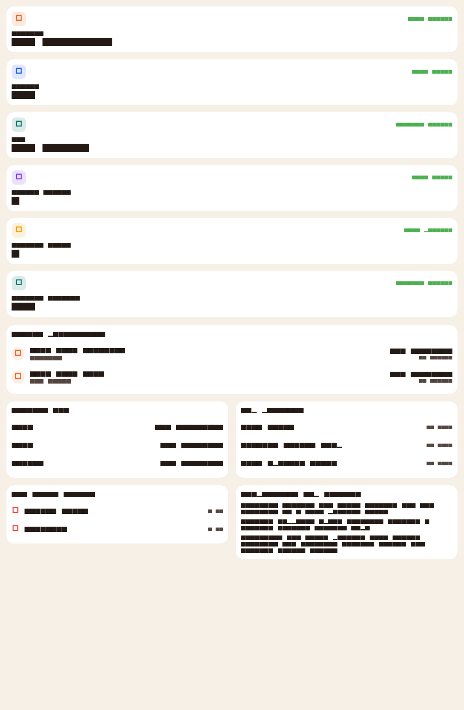
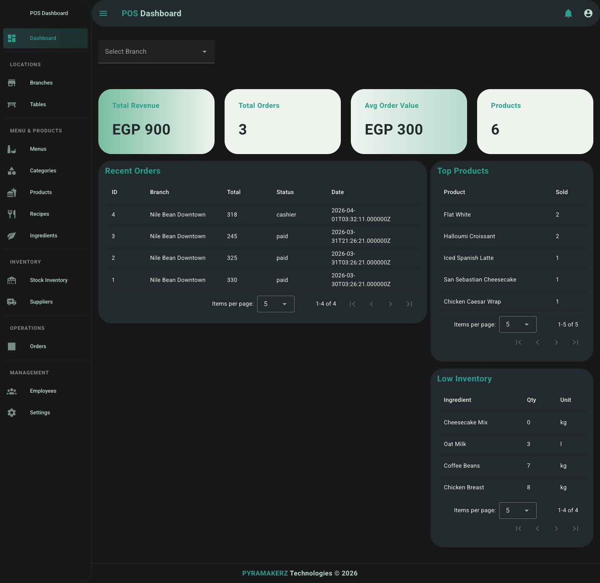
Scenario 2: Real Dine-In Exception Handling
Quantity Change
The waiter can reduce an item quantity after submission. The API keeps history and recalculates totals.
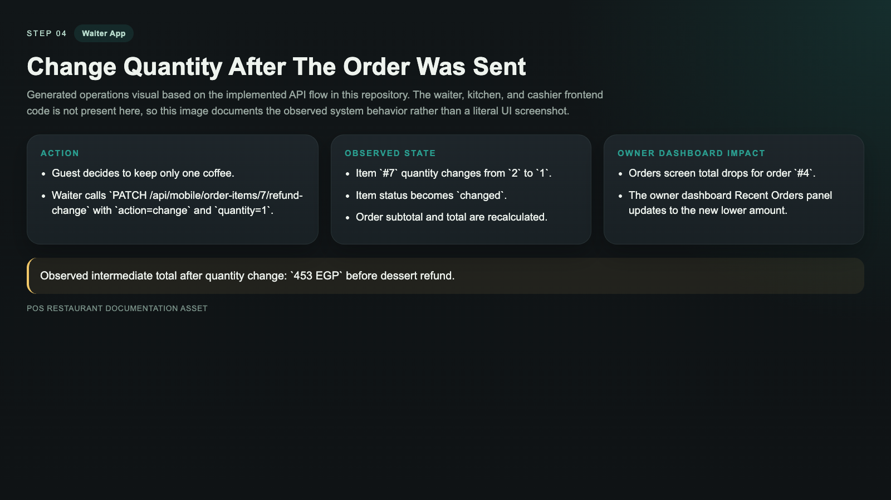
Refund One Item
The waiter can refund an item and preserve auditability instead of silently editing the order line.
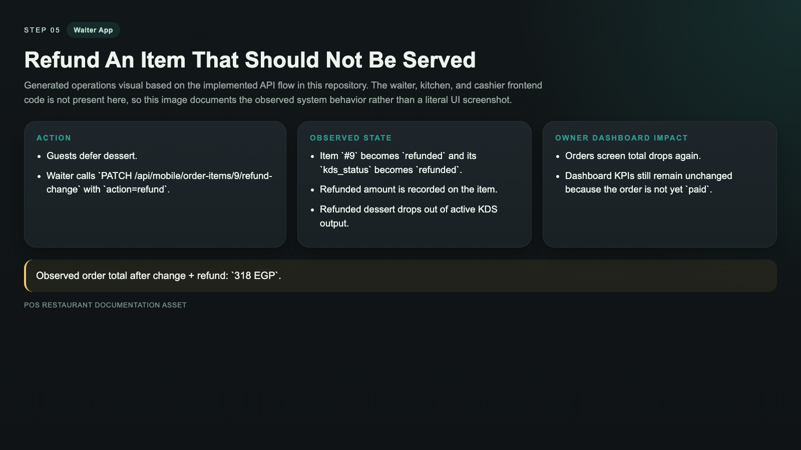
Reopen After Settlement
Paid orders can be reopened, which is important for late add-ons and floor corrections.

Move Table
The system supports audit-safe table moves by closing the source order and cloning active items into the target table order.
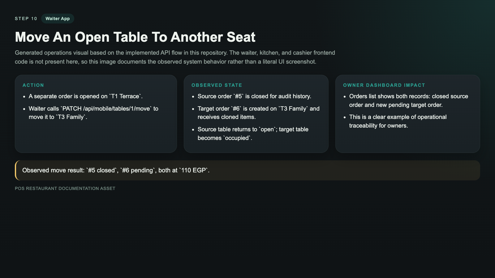
Scenario 3: Dashboard Effects During The Same Service Window
Before Service
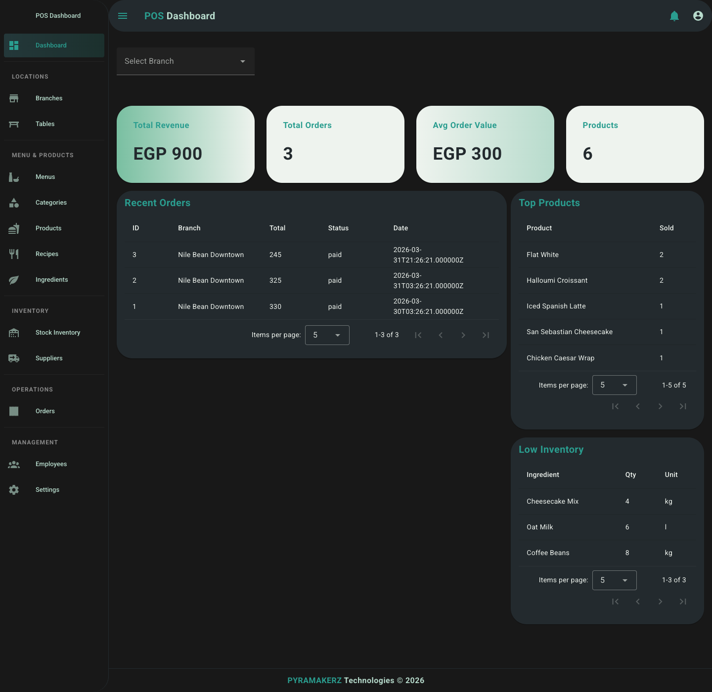
After Order And Adjustments
After Payment
After Table Move
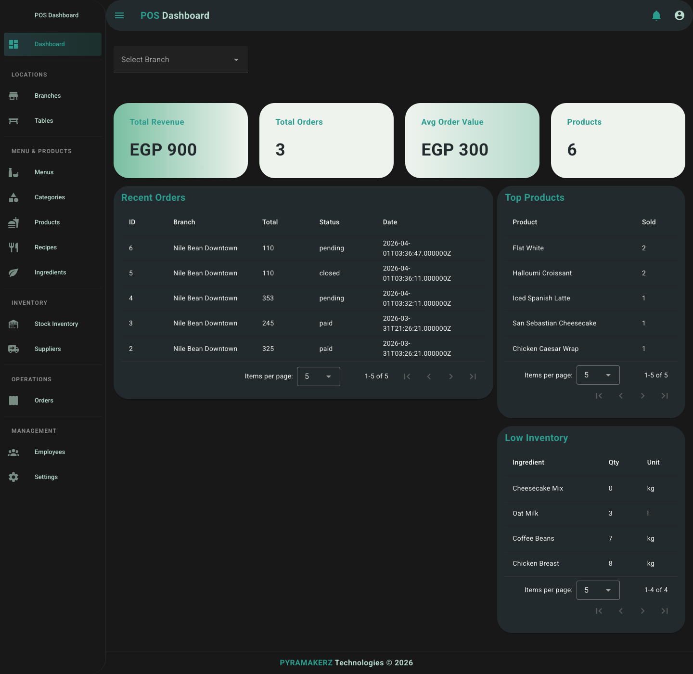
Recommended Next Scenario Packs
- Large family table splits the bill across cash plus card plus wallet.
- Busy brunch service with one kitchen bottleneck and one cashier bottleneck.
- VIP repeat guest arrives, waiter recognizes phone, and owner dashboard later measures loyalty lift.
- Multi-branch operator compares lunch shift performance between branches and drills into payment mix.